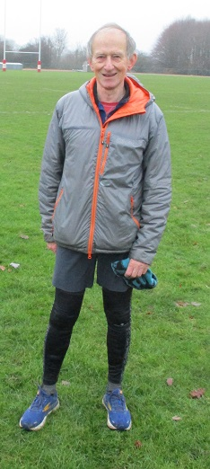

Nicola Glover won the final handicap race of the 2023 series, just ahead of Andrew Mead, ensuring Jim Knight remained on top of the series table to win the trophy by one point from David Hale.
David was fastest on the day in fifth place, just behind Caroline Fenwick who was the fastest woman.
In third place, Sam Znetyniak drew level with Lucy Wilkes on points for third in the series but narrowly missed out on the minor placing on tiebreak.
With the 2023 series settled, the 2024 version begins on Sunday 28th January with a five-miler from the track starting at 08:30.
All the details are here.